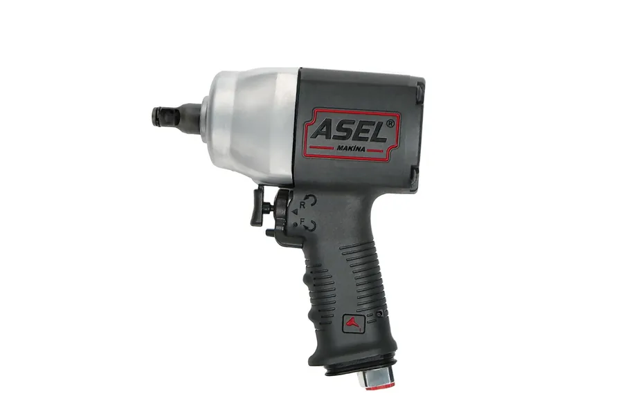

Havalı Somun Sökme · 1/2"
ASHT‑40512
Katalog modeli. Web kodu ASHT‑4050012 ile aynı aile.



Açıklama
Güçlü. Ergonomik. Kutulu.
ASHT‑40512, katalogdaki 1/2" çift çekiç somun sökme modelidir. Teknik özellikler ASHT‑4050012 ile aynıdır; kutulu görseller ve katalog kartı bu sayfada.
Teknik özellikler
| Çekiç | Çift Çekiç |
| Uzunluk | 167 mm |
| Cıvata Çapı | 19 mm |
| Soket Karesi | 1/2 inç |
| Maksimum Tork | 1750 Nm |
| Boşta Devir | 7250 r.p.m |
| Hortum Çapı | 10 mm |
| Hava Giriş Nipeli | 1/4 inç |
| Hava Tüketimi | 180 lt/dk |
| Çalışma Basıncı | 90–115 psi (6,5–8 bar) |
| Ağırlık | 2,07 kg |
| Ses Basınç Seviyesi LpA | 87 dB(A) |
| Ses Güç Seviyesi LwA | 102 dB(A) |
| Titreşim | 2,67 m/sn² |
Teslimat
Kutu içeriği / Teslimat
Markalı ASHT kutusu ve ürün yerleşimi. Kutulu set Drive’dan alınmıştır (etikette ASHT‑4050012 görünür).